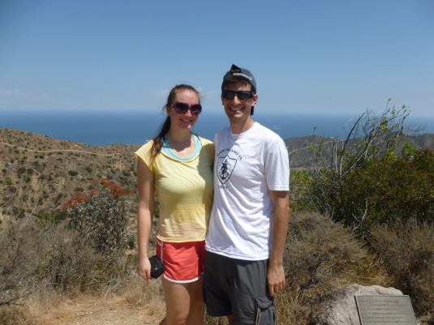
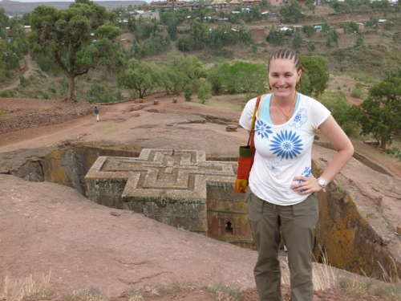
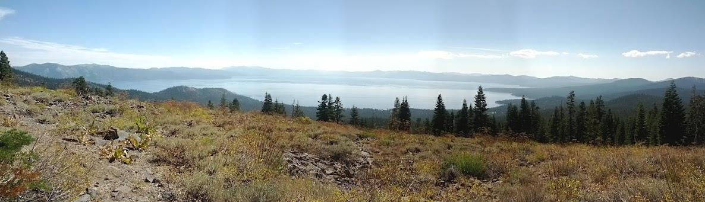
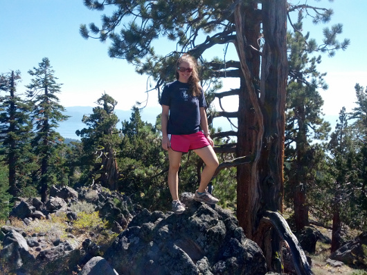
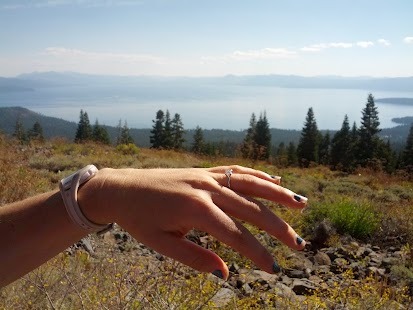
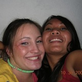
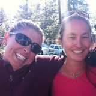
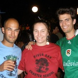

Jeanne-Marie and David are getting married!
Save the Date! September 21-22, 2013
The Wedding is Days away!

You can contact us at info@jmsanddavid.com
About Us
Jeanne-Marie
Is the most beautiful person in the whole world. She grew up in Marin. While at UC Davis, she joined the ski team and met David. She became a Doctor at Touro and is now doing a Family Medicine Residency in Long Beach. She likes:
- Cheeses
- David
- Snowflakes
- The color Red
- Switzerland
- Skiing
- Traveling
- Cooking
- Biking
David
If you know David, you know he loves pizza and skiing. Skiing with Jeanne-Marie and eating pizza is his recipe for a perfect day. A computer nerd at heart, he is a Software Engineer. He also likes:
- Brewing his own beer
- Traveling the world to find the best ski spots
- Mountain biking
- Watching sci-fi shows while JM falls asleep
- Skiing
- and of course, pizza
How we met
In the fall of 05, Jeanne-Marie returned to Davis and the Ski Team after a year abroad in France, and there were a few new skiers on the team. One of them stood out, and not just for his crazy turns and mad skills on the hill. They skied together all season, but when the snow melted, they stuck together. 7 years, several moves, and 4 years of medical school later, they are now living the SoCal life in Long Beach, CA where they'll be for the next few years, but still try to get to the mountains as much as they can.
Engagement
The sky was blue and the birds where chirping. I knew this was going to be a great day. I took Jeanne-Marie hiking. The top of the mountain was far. Jeanne-Marie wasn't getting tired, but I was from a giant boulder in my pocket. We finally got to the top, I asked Jeanne-Marie to pose for a picture. This was a ruse; while she turned around I took the ring out of my pocket and trembling, I proposed. After a shower of tears, she finally had to the ability to say yes.
The End



-

Richelle Enriquez
Maid of Honor
marathon runner, mad scientist, fellow peanut-butter-connoisseur
-
Carrin Tanaka
aspiring film composer, fashionista, and fellow lover of the color red
-
Mariya Borodyanskaya
Ukrainian singing sensation, shrink in training, dancing queen
-

Tommie Lukensmeyer
2nd grade teacher, bad-ass biker, everyone's favorite ski buddy
-
Debbie Pattison
tree hugger, adventure-lover, international woman of mystery
-
Kaleigh Sinnott
Junior Bridesmaid
cupcake chef, volleyball star, first cousin.
-

Johnny Melack
Best Man
best snow boarder on ski team, cold fusion technician
-

Marc Sinnott
up and coming realtor, euro espresso lover, best dressed
-

Mike Wyreman
ski bum extraordinaire, triva master, object balancer, local truckee celeb
-

Bill Nechtow
surgeon in training, fellow Alcatraz escape artist, fellow hefeweissen lover
Location
Sugar Bowl Ski Resort
Norden, CA
Saturday September 21, 2013
Time: TBA
For Reservations contact Ashley or Lisa at
- (530) 426-6742
- Toll Free (866) 843-2695
- hotel@sugarbowl.com
- Hours: Monday, Wednesday, Friday and Saturday from 9am to 3pm
- $135.00 per night, double occupancy
- $35.00 per extra guest
Houses and Condos are also available. Please ask for Lisa at the above Sugar Bowl reservations number.
Things to do around Truckee:
- Hike along the Pacific Crest Trail: there is a trail head on Donner Summit between Sugar Bowl and Truckee on old Highway 40. Hike South toward Squaw Valley or North toward Castle Peak.
- Mountain Bike--ask us about our favorite spots!
- Swim or lounge on the beach at Donner Lake
- Stroll through old town Truckee where you'll find antiques, boutiques, and cafes galore
- Float down the Truckee River: rent rafts or inner tubes in Tahoe City and float downstream toward Truckee
- Ride the Squaw Valley tram to the top and enjoy the view. Hike or take the tram back down.
- Visit the Donner Party museum at Donner Lake State Park.
- Try your luck on the slot machines in Reno or Cal-Neva on Lake Tahoe
From San Francisco and Sacramento:
- Take Interstate 80 east towards Sacramento/Reno. We are approximately 130 miles west of Sacramento.
- As you approach Donner Summit, exit the Norden/Soda Springs exit #174.
- Turn right on to Donner Pass Road (Highway 40), and continue for approximately about 3.5 miles passingSugar Bowl's Village Gondola parking lot, until you arrive at the Sugar Bowl Main Entrance (a large Sugar Bowl sign is displayed on your right).
- Turn right onto Sugar Bowl Road
- Continue through the gate (gate code will be provided) and veer to the right at the Y in the road following event signage.
- Travel through the downhill parking lot towards the large, green propane tank and follow the road towards the Village Lodge where the hotel and Village wedding location is located.
- You will take a left at a T in the road and then a right when under the gondola into our courtyard where parking is available for your event.
From Reno:
- Take Interstate 80 west to Truckee.
- For the fastest route from Truckee, take the last Truckee exit: Donner Pass Road.
- Turn left on to Donner Pass Road.
- Follow the road along side Donner Lake and proceed uphill for approximately three miles until you are over the summit.
- Turn left at our main entrance to Sugar Bowl (a large Sugar Bowl sign is displayed on your left). This road is called Sugar Bowl Road.
- Continue through the gate (gate code will be provided) and veer to the right at the Y in the road following event signage.
- Travel through the downhill parking lot towards the large, green propane tank and follow the road towards the Village Lodge where the hotel and Village wedding location is located.
- You will take a left at a T in the road and then a right when under the gondola into our courtyard where parking is available for your event.
Registries
Registries are a work in progress. Please check back for updates.